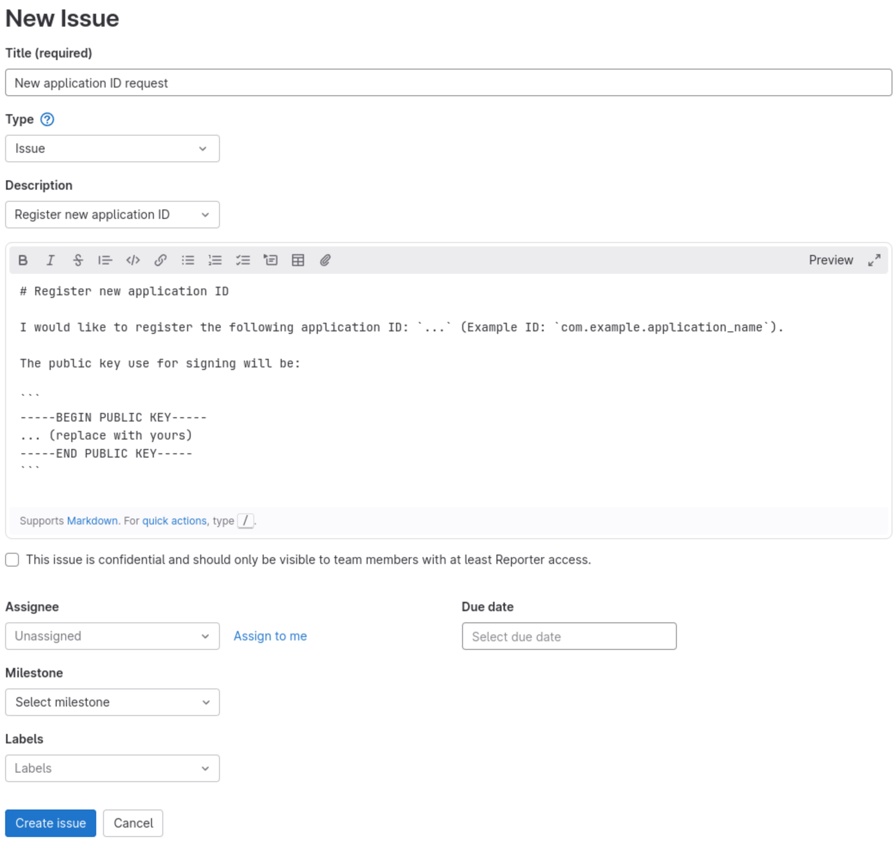
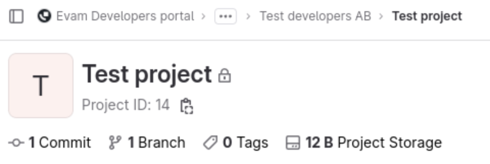
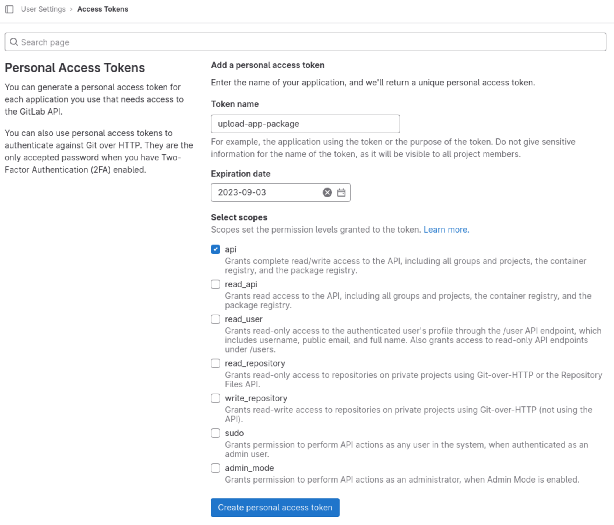

Deployment¶
Minimum version
Make sure you use the Evam SDK version 2.3.0 or above to use this feature.
Evam Developer portal account required
You need an account in the Developer Portal to deploy your certified apps.
This article describes the process of deploying your Certified Application to the Evam platform.
Overview¶
The Developer portal is the main gateway for any Certified App developer or Strategic partner to deploy an app package. This is the place you will push your application package to once it is built and ready for deployment.
Packages deployed to the Developer Portal will be reviewed by Evam to ensure they meet the quality standards that users of the Evam platform expect. Those reviews can take from a few hours to several days depending on the size and nature of the update.
Once validated, Central Services will download the package and make it available for Vehicle Services to download. Once downloaded by Vehicle Services, users will be able to access it.
How to publish a new release¶
Support
The steps below have been designed and tested on a Linux-based OS. MacOS should work in the same way of out of the box but Windows will require small adjustments that are out of the scope of this article.
If you are on Windows, we recommend you use WSL2 for those steps.
See how to enable WSL.
Follow these steps to create a new release of your application.
Step 1 - Setup your package for publishing (do once)¶
This step is a one-time only setup that is required to register your application in the Evam platform.
Create a signing key for publishing¶
All packages pushed to Vehicle Services must be signed by an authorized Certified App Developer or Strategic Partner.
To achieve this, you must generate a new private/public key pair for signing the package before it is pushed to the Developer Portal. Packages with no signature data or errors will be rejected.
This is how you can generate a new key pair:
openssl genrsa -out private.pem 2048
openssl rsa -in private.pem -pubout > public.pem
You now have a private and public key that can be used for signing.
You should store the private one securely (ideally it should be generated in and stored in a protected CI/CD environment). The public one you will need in the next stage.
Register an application ID¶
Each Certified Application has an unique ID which is used by the platform to identify the application. This ID is to be specified in the Evam Manifest file and has the format (example): com.example.application_name. You can also make use of subdomains such as com.example.subdomain1.subdomain2[...].application_name.
Each Application ID has to be registered in the Evam platform by creating an issue in your private issue tracker. It is located in your organization’s “Home” project in the Developer Portal.
Information
The issues in the private issue tracker can only be seen by Evam and the members of your own organization.
In the issue tracker, create a new issue with the Description template “Register new Application ID” and fill in the required fields. Once done, submit the issue.
Example - Register new app ID

Evam will review this submission to ensure the Application ID is available and register it. Once done, you will be able to start deploying your application.
Setup your Evam app Manifest¶
The application manifest is location at public/evam.json in your application.
You should set it up accordingly with your newly register app ID, and add the required information as well - logo, permissions, settings, name, etc.
See the article below for more information.
Step 2 - Build your application¶
Before building your application, make sure to update its version and versionCode in the Manifest. The version code will be used to detect an update, it always should be stricly superior to the previous pushed version.
The version should always be in the format X.Y.Z for production-ready releases, and X.Y.Z-rcN for beta releases (X.Y.Z-betaN is also accepted). The numbers X, Y, Z and N are integers in the range 0 to 99.
You may build your application using the following run command:
npm run build
This will produce a compiled version of your application under the dist/ folder.
You may then create a signed version of this package :
npm exec evam-sign -- --public public.pem --private private.pem
The signed package will be available as <version>.tar.gz, the version being taken from the Evam manifest file under build/evam.json.
For instance, if the app ID is “1.0.0” then the package will be 1.0.0.tar.gz.
Step 3 - Upload the package to the Developer Portal¶
It is now time to upload the signed package to the Developer Portal package registry.
The first is for you to decide in which project you wish to upload this artifact. Central Services will scan all projects so there is no requirement from Evam side on the hosting project but you may wish to separate your applications in different projects for the sake of management.
Simply create a project in your developer portal group or select an existing one, and write down its project ID.
Example - Get project ID

In this case, the project ID is 14.
A personal access token must be generated to allow the upload of artifacts to the Developer Portal.
Using a web browser, navigate to Personal access tokens
Create a token by giving it a name and minimal scope of
api, it is recommended to provide an expiration date too for security reasons.
Example - create a personal access token

You may then push it to the developer portal:
curl -H "PRIVATE-TOKEN: YOUR_PRIVATE_TOKEN_WITH_API_ACCESS" https://www.developers.evam.life/api/v4/projects/14/packages/generic/APP_ID/VERSION/app.tar.gz
The app.tar.gz corresponds to the signed package you generated at the previous step.
You should get a success message back:
{"message":"201 Created"}
At that stage, the application package is uploaded to the Developer Portal. It will undergo a review by Evam and upon success be deployed to the organizations who decided to install your application in their vehicles.